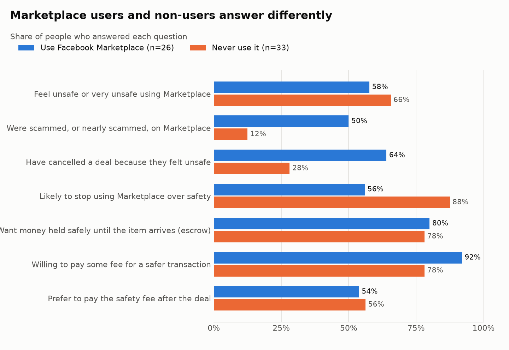

Among people who actually use Facebook Marketplace, the safety problem is real and they would pay a small fee to fix it. Two of the proposal's three success criteria are met. The third, real behaviour, has not been tested yet.
| Hypothesis | Marketplace users | Verdict |
|---|---|---|
| H1 The safety problem is real and common | 50% scammed or nearly · 64% cancelled a deal | Supported |
| H2 People would pay a small fee | 92% would pay something | Supported, at low fees |
| H3 People want a third party to hold the money | 80% chose escrow | Partly supported |
| H4 People would add an extra step to their deals | — | Not tested |
The survey was a story-led web prototype: before answering, people followed a student buyer and a working seller through the same risky deal, then saw how SafeTrade would protect both. This made an unfamiliar idea (escrow) easy to picture, and it also primed people, which likely pushed some answers up. That trade-off, and nine other design weaknesses, are set out honestly in section 7.
Two findings changed how the results are read. First, 55% of respondents never use Facebook Marketplace, so results are reported for users and non-users separately. Second, the sample is small (26 users) and young (90% aged 18–24). The results are an early signal, not proof.
Recommendation: follow the proposal's next phase. Run a "Pay securely" demand test aimed only at Marketplace users, with a fixed version of the survey (section 8).
The proposal named four assumptions that must hold before anything is built. We turned each into a hypothesis that data could support or reject.
SafeTrade's idea is an escrow layer for Facebook Marketplace: the buyer pays into SafeTrade, the seller sees the money is real, they meet, and the money is released only when the buyer confirms the item. That only works as a business if four things are true:
| ID | Hypothesis | Supported if… | Tested by | Proposal link |
|---|---|---|---|---|
| H1 | Problem. Marketplace users feel unsafe, have met scams, and it changes how they trade. | A majority feel unsafe (proposal criterion 1), and many have had a scam, a near-scam or cancelled a deal. | Q4, Q5, Q6, Q7, Q8 | Assumption: perceived value of safety · Criterion 1 |
| H2 | Willingness to pay. Users would pay a small fee per deal for safety. | More than half would pay any fee. The proposal said "a meaningful portion" with no number, so 50% is our stated assumption. | Q10, Q11 | Assumption: willingness to pay · Criterion 2 |
| H3 | Trust in escrow. Users want a third party to hold their money until the deal is done. | Escrow is among the most wanted safety features. | Q9, Q11 | Assumption: trust in platform |
| H4 | Workflow adoption. Users would add an extra step to how they buy and sell. | People choose the safe option when it's offered, not just say they would. | Not in the survey; needs the demand test | Assumption: workflow adoption · Criterion 3 |
For each hypothesis, the "nothing to see here" version is what would stop the project: most users feel safe enough (H1), would not pay anything (H2), or prefer simpler fixes like ratings or meeting in public (H3). The survey was designed so each of these could show up in the answers: every question has a "no" or "none" option, and escrow sits in a list next to cheaper alternatives.
All four are about people who use Facebook Marketplace. Q2 ("How often do you use Facebook Marketplace?") defines that group. This matters later: more than half of the people who answered are not in it.
The guiding rule from the proposal: validate the problem before building the solution. Spending months building an escrow platform for a problem people don't feel would be the most expensive way to learn.
| Option | Good for | Weak for | Decision |
|---|---|---|---|
| Build the platform first | Real behaviour with real money | Months of work and payment, legal and safety risk before knowing if anyone wants it | Rejected for now |
| One-on-one interviews | Deep "why"; hearing real scam stories | Slow, few people, hard to put a number on willingness to pay | Next step, to explain the survey results |
| Plain Google Form | Free and fast | Most people have never used escrow, so they can't judge it from one sentence. Low completion on phones. | Rejected |
| Story-led web survey prototype | Explains the idea in 2 minutes, works on a phone, gives countable answers, easy to share | The story can prime answers; says what people say, not what they do | Chosen for phases 1 and 2 |
| "Pay securely" landing page | Real behaviour: clicks and sign-ups | Needs traffic from real Marketplace users | Planned for phase 3 |
The trade-off we accepted. Showing the problem and the solution before the questions makes people think about danger and safety right before they answer. This likely raised the share who feel unsafe and who would pay. We accepted this to get people to understand the idea, but it means the results should be read as an upper bound. Section 7 sets out how a second version can measure this effect.
The first analysis was a single notebook. It worked once, but had three mapping bugs that silently left people out, and no way to re-run safely as new answers arrived. We rebuilt it as an ELT pipeline (extract, load, then transform in SQL) with quality checks, so every number in this document can be traced to the data and re-created by anyone with one command. Section 5 summarises it.
The survey moves people through a fixed order: understand the problem, describe their own experience, then react to the solution. Each block feeds one or more hypotheses.
Scams on Marketplace hurt both sides: buyers lose money to sellers who vanish, and sellers hand over goods for fake proof of payment. So the story has two people. Johnson, a second-year student whose laptop died four days before a deadline, finds the right laptop at the right price and freezes at the thought of losing everything he has left. Phumelele, a busy professional selling the same laptop, worries about a fake Capitec proof of payment and about strangers coming to her home. The last screen shows SafeTrade protecting both. Each worry in the story matches a concern option in Q6, so people could recognise themselves in it.
| Rule | Why |
|---|---|
| Problem before solution | Ask about people's own experience before showing what SafeTrade offers, so the solution questions come after they've thought about real risk. (The story still shows the solution first; see section 7.) |
| Severity before price | Q7 and Q8 ask whether the problem changes behaviour. A problem people put up with is not one they'll pay to fix. |
| One question per screen, 12 questions, about 2 minutes | Short and focused on a phone; a progress bar shows how much is left. |
| Closed answers, except the last | Answers can be counted and compared; one optional open question catches what we didn't think of. |
| Answers in everyday words | "Almost — I caught it in time" and "I'm almost done with it" sound like people talk, which makes picking the right one easier. |
| "Select all that apply" for concerns and features | Most people have more than one worry; forcing one choice would hide the second-biggest. |
| Both fixed and percentage fees | The proposal left the pricing model open, so Q10 offers rand amounts and a percentage of the item price. |
| Contact details last and optional | Asking for a phone number is exactly the kind of trust the product is about. People could submit with no details at all. |
| Q | Question | Tests | Why we asked it |
|---|---|---|---|
| 1 | What's your age group? | — | Describe the sample; check it isn't only one group. |
| 2 | How often do you use Facebook Marketplace? | Segment | Defines the target group. Everything is reported for users and non-users. |
| 3 | Have you ever bought or sold something online? | — | Separates people new to online trading from experienced ones. |
| 4 | How safe do you feel using Facebook Marketplace? | H1 | Directly measures criterion 1 on a 5-point scale. |
| 5 | Have you ever experienced or nearly experienced a scam on Marketplace? | H1 | Separates real experience from worry. "Nearly" counts, because a caught scam still costs trust. |
| 6 | What concerns you most about Marketplace? | H1, H3 | Which risks matter most. Escrow solves some (payment fraud) and not others (meeting strangers). |
| 7 | How likely are you to stop using Marketplace because of safety concerns? | H1 | Is the problem bad enough to drive people away? |
| 8 | Have you ever cancelled a deal because you felt unsafe? | H1 | A past action, not an opinion: the strongest problem evidence in the survey. |
| 9 | What features would make you feel safer? | H3 | Does escrow beat cheaper fixes like ratings, verification or safe meetup spots? |
| 10 | How much would you pay per transaction for guaranteed safety? | H2 | Criterion 2, and the price range for a first business model. |
| 11 | When would you prefer to pay the safety fee? | H2, H3 | Shapes the payment flow: charge up front, on release, or only for big items. |
| 12 | What would make you trust Facebook Marketplace more? (optional, open) | — | Catches ideas outside our options. Kept private, because people may name others. |
59 responses arrived between 13 and 21 April 2026. One was a repeat sent 14 seconds after the first, so 58 responses were analysed.
The prototype is hosted on Netlify at safetradesa.netlify.app. When someone submits, the page sends their answers to a Google Apps Script, which adds a row to a private Google Sheet. People could leave a name and phone number to join an early-access list, or submit without any details.
Every percentage uses the people who answered that question as its base, and the base is stored next to the number. Responses with identical answers sent within 2 minutes count once.
Answers are personal information under POPIA. Personal details are removed in the very first step, before anything is saved. The sheet stays private, and the public dataset contains only the multiple-choice answers. Contact details were only used to count how many people chose to leave them.
| Group | Responses | Share |
|---|---|---|
| Use Facebook Marketplace (daily, weekly or occasionally) | 26 | 45% |
| Never use Facebook Marketplace | 32 | 55% |
| Aged 18–24 | 52 | 90% |
| Aged 25–34 | 6 | 10% |
The sample is young and small. Nobody aged 35 or older answered, although the survey offered those options. The results describe young adults, most likely students, and not South African Marketplace users as a whole.
Users and non-users answer very differently. Users are four times as likely to have been scammed or nearly scammed, which is what you'd expect if the problem is real and comes from using the platform.

| Measure | Users | All |
|---|---|---|
| Feel unsafe or very unsafe on Marketplace (Q4) | 58% (15 of 26) | 61% |
| Were scammed or nearly scammed on Marketplace (Q5) | 50% (13 of 26) | 30% |
| Have cancelled a deal because they felt unsafe (Q8) | 64% (16 of 25) | 45% |
| Likely to stop using Marketplace over safety (Q7) | 56% (14 of 25) | 73% |
Criterion 1 is met (58% is above 50%). The strongest evidence is Q8: nearly two in three users have walked away from a deal, which is lost value SafeTrade could recover. Top concerns across everyone: fake sellers (71%), item not as described (64%), payment fraud (48%), meeting strangers (45%), no recourse (38%).
| Fee people chose (Q10) | Users (n = 25) | All (n = 56) |
|---|---|---|
| Nothing (R0) | 8% | 14% |
| R5 – R10 | 36% | 27% |
| R10 – R20 | 8% | 9% |
| R20 or more | 28% | 23% |
| 4–7% of the item price | 20% | 27% |
Criterion 2 is met: 92% of users would pay something. But the most common choice is R5–R10, and stated willingness to pay is usually higher than real payment. On timing (Q11), 54% would pay after the deal, 26% before, and 19% only for items over R1,000.
Escrow was the most chosen safety feature: 80% of users and 80% of everyone, ahead of ratings (75%), safe meetup spots (71%), verified profiles (66%) and ID verification (62%). But wanting money held safely is not the same as trusting a new, unknown company to hold it. The survey never asked that directly, so H3 is only partly supported.
No question measured behaviour. One weak signal exists: 25 of 58 people (43%) chose to leave a WhatsApp number for early access, even though giving a number to strangers is the very risk the survey is about. This was encouraged by an offer of a free first transaction, so it hints at interest but does not replace the demand test.
Looking back at the survey with the data in hand, these are the weaknesses that most affect how far the results can be trusted, and how version 2 fixes each.
| # | Weakness | Effect on results | Fix in version 2 |
|---|---|---|---|
| 1 | The story shows the problem and the solution before the questions | Primes people toward "unsafe" and "would pay"; results are likely an upper bound | Show the story to half of the people at random, after the questions for the other half, and compare |
| 2 | No screening: non-users answered Marketplace questions | 55% of answers come from outside the target group | If Q2 is "Never", skip to a short separate path |
| 3 | The opening screen claims "1 in 6 Marketplace users globally have been scammed" with no source | Unsupported claim; adds to priming | Cite a source or remove it |
| 4 | Price bands overlap (R10 and R20 each sit in two bands) and mix rands with percentages | A person willing to pay R10 could pick either band; % and rand can't be compared | Non-overlapping bands (R1–R9, R10–R19, R20+), and ask about fixed vs % in a separate question |
| 5 | Q10 says "guaranteed safety" | Promises more than escrow can deliver; may raise the price people choose | "…for your money to be held until you receive the item" |
| 6 | Stated, not real, willingness to pay | People usually pay less than they say | The demand test, with a real price shown |
| 7 | Q11 mixes timing (before/after) with item value (R1,000+) | The 19% who chose "high-value only" said nothing about timing | Two questions: when to pay, and for which items |
| 8 | Q7 answer labels carry opinions ("it's getting worse") | Nudges people toward agreeing it's bad | A plain 5-point likelihood scale |
| 9 | Q9 has no "none of these" option, and H3 and H4 are never asked directly | Can't tell indifference from a skipped question; trust in a new company unknown | Add "None"; ask "Would you pay into an account held by a new company you haven't used before?" |
| 10 | Small, young convenience sample; buyer or seller not asked | 26 users is too few to split further; results describe students | Share in Marketplace community groups, aim for 100+ users, and ask "Do you mostly buy, sell or both?" |
| 11 | Submit button can be tapped twice | One response arrived twice (fixed in the pipeline) | Disable the button after the first tap |
Why list these. None of them make the findings useless: the gap between users and non-users is too large to come from wording alone. But they set how much weight the numbers can carry. Being clear about that is what makes the next decision sound.
Using the proposal's decision framework (Proceed, Refine, Reassess): proceed to phase 3, with a refined survey.
| Criterion (proposal §6.4) | Result (users) | Status |
|---|---|---|
| 1. A majority are concerned about transaction safety | 58% feel unsafe | Met |
| 2. A meaningful portion are willing to pay (bar: 50%, our assumption) | 92% would pay a fee | Met |
| 3. Observable interest in a "Pay securely" option | — | Not measured yet |
Criteria 1 and 2 support going ahead, but the evidence is early (26 users, primed answers). Building the platform now would skip the one test that measures behaviour. So the next steps are the cheapest ones that close the biggest gaps:
What would change the decision. If the demand test shows few clicks from real Marketplace users, or version 2 (without priming) shows most users feel safe, the right move is to refine the idea (for example, verification instead of escrow) or reassess it, as the proposal sets out.
As shown in the prototype. Questions 1–11 were single choice unless marked; question 12 was optional free text.
| Q | Question | Answer options |
|---|---|---|
| 1 | What's your age group? | 18–24 · 25–34 · 35–44 · 45+ |
| 2 | How often do you use Facebook Marketplace? | Daily · Weekly · Occasionally · Never |
| 3 | Have you ever bought or sold something online? | Yes · No |
| 4 | How safe do you feel using Facebook Marketplace? | Very safe · Safe · Neutral · Unsafe · Very unsafe |
| 5 | Have you ever experienced or nearly experienced a scam on Marketplace? | Yes — it happened to me · Almost — I caught it in time · No, but I worry about it · No, never |
| 6 | What concerns you most about Marketplace? (select all) | Fake sellers / listings · Payment fraud (fake proof of payment) · Meeting strangers in person · Product not as described · No recourse if things go wrong |
| 7 | How likely are you to stop using Marketplace because of safety concerns? | Very likely — I'm almost done with it · Likely — it's getting worse · Not likely — I still use it carefully |
| 8 | Have you ever cancelled a deal because you felt unsafe? | Yes — more than once · Yes — once · No, but I've thought about it · No |
| 9 | What features would make you feel safer? (select all) | Secure payment holding (escrow) · Verified user profiles · Safe meetup location suggestions · ID verification · Ratings and reviews |
| 10 | How much would you pay per transaction for guaranteed safety? | R0 — I wouldn't pay · R5 – R10 · R10 – R20 · R20+ · A small % of the item price (4–7%) |
| 11 | When would you prefer to pay the safety fee? | Before the transaction · After a transaction · Only for high-value items (R1,000+) |
| 12 | What would make you trust Facebook Marketplace more? | Free text, optional |
A thank-you screen offered early access with a free first escrow transaction, then asked for a name and an optional South African phone number for one WhatsApp message at launch. People could also submit without any contact details.
All figures come from the marts built by the SafeTrade pipeline (reports/findings.md in the repository), except the contact count in section 6, which was counted from the private sheet and is not part of the public data.